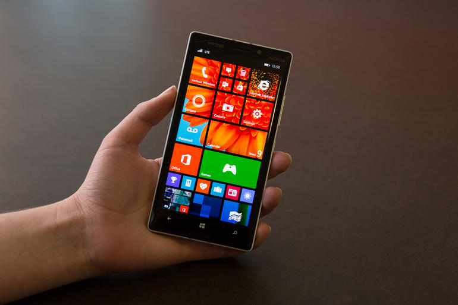

Windows Phone è stata una famiglia di sistemi operativi per smartphone di Microsoft, presentata per la prima volta al Mobile World Congress il 15 febbraio 2010.
Windows 10 Mobile ha terminato il supporto ufficiale il 10 dicembre 2019.
Continua a leggere su Wikipedia
Il sito ufficiale di Windows Phone non esiste più
